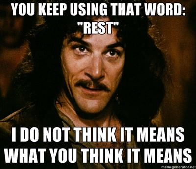
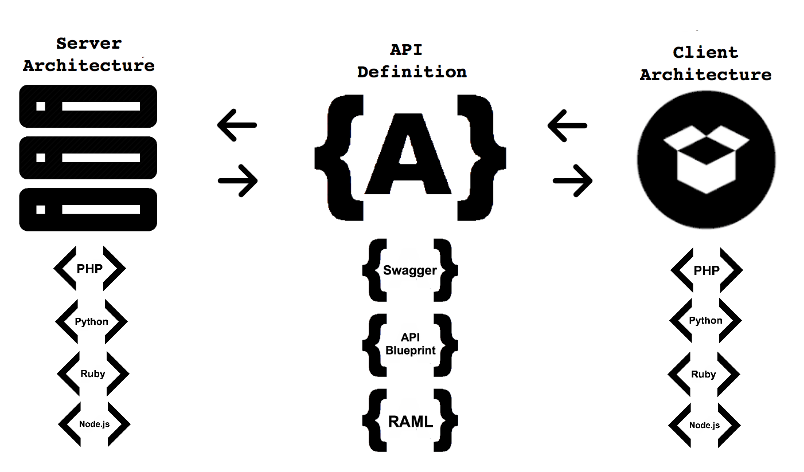

A RESTful Adventure
[15 sec]
Welcome to the RESTful Adventure workshop.
[introduce the instructors]
Over the next couple of hours we will take you on a journey through the creative process of designing and implementating a simple adventure game.
Goal
Design and Implement
a RESTful API
☺
+𝓡
=☁
[30 sec]
You'll learn how to combine a user-oriented perspective with the principles of REST to create elegant web services.
Web services that are elastic, maintainable and reliable.

REST is often misunderstood
So, before we go any further, we need to rewire our brains a little bit.
REST is not
[URL|RPC|CRUD] over HTTP
REST is not HTTP - HTTP APIs are not inherently RESTful.
REST is not pretty URLs.
REST is not RPC over HTTP. We aren't talking about calling remote functions on a server.
And finally, REST is not simply a way to do CRUD over HTTP.
REST is
An architectural style for network-based applications
A set of constraints formalized by Roy Fielding
A counterpoint to RPC
REST is an architectural style that formalizes the concepts behind the way the web was intended to work. It acts as a guide for designing systems that embody the best characteristics of the web.
REST was defined by one of the early pioneers of the web, Roy Fielding, in his doctoral dissertation.
REST avoids the brittleness, scalability, and maintainability problems typical of RPC-based architectures. Rather than thinking about "functions" or "endpoints", as you would in RPC, you think in terms of "resources" and "hypermedia".
Constraints
“The shallow consider liberty a release from all law, from every constraint. The wise man sees in it, on the contrary, the potent Law of Laws.”
- Walt Whitman
REST is defined by a set of 6 architectural constraints.
Taken together, these contraints provide a mold for RESTful applications.
[TODO: pair down content to fit within time]
🍜 Client-Server
🐘 Stateless
📦 Cache
🎹 Uniform Interface
🔗 Layering
🎮 Code-on-Demand
Client-Server: This is all about creating a clear separation of concerns, which affords independent evolution and management between client and server. For example, when I sit down at my local Ramen shop, a server brings me a menu of options. I choose from the list of options and place my order. The server then goes off to interface with the backend kitchen services on my behalf. I don't need to know or care how my food is prepared, just that I get what I ordered in a timely manner.
Stateless: This doesn't mean that your system has no state, just that there is no state shared between individual requests. Transports are unreliable, so you want to avoid embedding state in them. The client is like an elephant that never forgets; the client is responsible for remembering its own session state, and including that information in every request to the server. If a server goes down, a client should be able to provide its session state to a different server in the pool and get the same answer back as it would have from the failed box. If a client crashes or it's network connection fails, it should be able to pick up later where it left off.
Cache: The idea here is to stock your goods as close to the consumer as possible, to reduce latency and transportation costs. For example, when I click "buy" on Amazon, the fulfillment system routes my order to the warehouse closest to my home that has my item in stock. Amazon regularly caches popular goods in warehouses as close to the consumer as they can get them. REST provides for caching by constraining systems to explicitly define caching parameters through the uniform interface.
Uniform Interface: The idea here is to provide a set of ground-rules, an a-priori baseline of syntax and semantics. A pianist can sit down at any piano and know what to do. The mechanisms under the lid can and do vary wildly, but the meaning and layout of the keys remain the same. For REST this means a shared language of identifiers, methods, and media types.
Layering: This extends Client-Server to create a chain of clients and servers, each exposing the same interface. It's like a recursive function. DNS works like this. When I want to find rackspace.com, I'll usually ask a local DNS server for the address. If the local DNS server doesn't know the IP address for my domain, it will act like a client and query another DNS server for the information, and so on and so forth.
Code-on-Demand: This is an optional constaint that allows the server to delegate processing to clients when that is more efficient, and to also provide dynamic logic to augment the client's limited abilities to understand and process resources provided by the service. When it comes to the web, this constraint people usually equite code-on-demand to JavaScript, but there isn't any reason why it can't be used in other contexts. For example, game engines typically rely on scripts to orchestrate gameplay. These scripts can be delivered dynamically from the server to the client.
Elements of the Uniform Interface
[draw a big-picture diagram here, then point out the elements and talk about them briefly]
[TODO: pair down content to fit within time]
REST components categorize individual nodes into various roles, with each role conveying a specific set of expectations. Examples of components include origin servers, user agents, gateways, and proxies.
REST connectors define the types of actions a node performs, such as caching or acting as a client or server. A given component may implement one or more connectors.
Resources are client-facing models that map in some way to backend data entities. The mapping can be n-to-n and involve any number of transformations and amalgamations. Each resource is identified by a unique, opaque identifier, typically a URL. REST does not dictate a particular URL schema, although it can be helpful to adopt a human-friendly format, as we'll see later on. It's important to note here that the server has complete ownership of this identifier, which means that the client never constructs it, but simply "copies and pastes" identifiers it recieves from previous requests to the server. This makes it easier to evolve your API without breaking clients.
Representations are snapshots of a resource at a point in time. A single resource can have multiple representations, such as JSON, PNG, or HTML. These representations are formalized as Internet media types. The client and server perform content negotiation to determine the desired representation.
Control data is passed along with requests and responses to specify general semantics and to modify the default behavior of connectors. In HTTP, examples of control data include the HTTP method (e.g., GET and POST) and conditional headers, such as If-None-Match.
Hypermedia is one of the most often ignored aspects of REST. This is ironic, because hypermedia is probably the most important difference between REST and other architectural styles, such as RPC. Rather than relying on brittle endpoint specifications, REST uses hypermedia to identify resources and provide a living web of links that clients traverse in order to change application state. The server may provide different links to the client according to the current state of the system. In this way, REST-based systems can be very flexible, allowing different components of the system to evolve somewhat independently.
Your REST != My REST
Keep calm. It's going to be okay. Be flexible.
Often times a design decision needs to be made
The important part is being consistent throughout your API
Think programming style guide
Examples:
The way URLs are structured
JSON resource schema
Whether or not to use X headers
Brainstorming
Draw some pictures
Simple tools like text editors
Identifying resources
Typing out a list of URLs
Mocking up some sample JSON resources
Use Cases
Who is your audience?
Not necessarily designing the API for everyone
Stick to known use cases without designing yourself into a corner
Early Technical Decisions
Media Types
IDs vs hypermedia
Pretty URLs
Versioning
Authentication
Resource Updates
(State Transitions)
JSON vs. XML vs. YAML vs. Protocol Buffers. Pick one that meets your requirements. Default to YAML.
I'll just pose a question on this one, how much does thinking of the data model implementation affect design of the API resources?
It affects your URLs so you'll need to decide if you want them early on
Not a solved problem and there's no de facto standard.
Punt
PUT or PATCH or JSON PATCH
API Definition
Formats
API Blueprint
RAML
Swagger
Formalize your thinking
It's not documentation
It's the contract between client and server

Image Credit: Kin Lane
It drives the implementation of the client
It drives the implementation of the server
When it comes to the implementation of the server, there is a huge tempation to have the server generate the API defintion from code.
But doing so makes it all too easy to break the API and your clients.
Changes to the API definitions need to be considered carefully and communicated to clients.
And any time you talk about API changes it begs the question of versioning, which will be touched on a bit later.
Swagger
Chosen to learn more about it
YAML and JSON. Built on JSON Schema
It's certainly not perfect
The spec can be hard to follow and there aren't examples of everything
2.0 released late last year and not all of the tooling has caught up
The editor has improved since we began creating this workshop
Some of the 3rd party tools look like they're in good shape, particularly the Python stuff
I'd also be very interested to hear from people who've worked with RAML and API Blueprint
Lab: Paths
swagger: "2.0"
info:
version: 1.0.0
title: A RESTful Adventure
host: localhost
schemes:
- http
consumes:
- application/json
produces:
- application/json
paths:
/characters:
???
Lab: Examples
swagger: "2.0"
info:
version: 1.0.0
title: A RESTful Adventure
host: localhost
schemes:
- http
consumes:
- application/json
produces:
- application/json
paths:
/characters:
get:
responses:
200:
examples:
application/json: |-
{
"?": "?"
...
}
post:
x-examples:
application/json: { "?": "?" }
responses:
201:
examples:
application/json: |-
{
"?": "?"
...
}
Lab: Models
swagger: "2.0"
info:
version: 1.0.0
title: A RESTful Adventure
host: localhost
schemes:
- http
consumes:
- application/json
produces:
- application/json
paths:
/characters:
get:
summary: List all Characters
operationId: list_characters
responses:
200:
description: An array of Characters
schema:
properties:
characters:
type: array
$ref: "#/definitions/Characters"
examples:
application/json: |-
{
"characters": [
{
"id": "1234",
"name": "Knox Thunderbane",
"dungeon_id": "2345",
"room_id": "3456"
}
]
}
post:
summary: Create a Character
operationId: create_character
parameters:
- name: body
in: body
required: true
schema:
properties:
name:
type: string
minLength: 1
maxLength: 256
x-examples:
application/json: { "name": "Knox Thunderbane" }
responses:
201:
description: Character created
headers:
Location:
type: string
format: url
description: A link to the Character
schema:
$ref: "#/definitions/Character"
# TODO: Do we want a top-level "character" key like we have with "characters"? e.g. { "character": {"id": 1234, ...}}
examples:
application/json: |-
{
"id": "1234",
"name": "Knox Thunderbane"
}
definitions:
Character:
type: object
required:
- ?
properties:
id:
type: ?
readOnly: ?
name:
type: ?
minLength: ?
maxLength: ?
dungeon_id:
type: ?
room_id:
type: ?
Characters:
type: array
items:
$ref: "#/definitions/Character"
User-Centric
What kind of clients will you support?
Writing some client code for those URLs
curl
mobile
SDKs
Writing some mock server code for those URLs
Flask
Lab: curl
HOST=http://localhost:5000
echo "Get characters"
curl ?
echo "Create a character"
curl ?
Documentation
APIs should as self documenting as possible
Should be as machine readable as possible
There will always be a semantic gap that requires human understanding
This is where beautiful documentation comes in
Errors
Good errors can make or break your API
Take auth for example. It's the first thing developers go through and they always get it wrong the first time. If your error messages are bad, they will walk away and not come back.
Give developers actionable errors. Include a URL to a web page where they can get more information. Include a team email address where they can get support.
Include a transaction id for error response. Used to easily match an API user debugging their application to the errors on the server side, as discoverable by the operations team running the API.
Example
{
"transaction_id": "71607e7c-df7c-45f3-b571-d1829de4ad9a",
"code": "736.9",
"title": "Teleport Denied",
"description": "The room you tried to visit does not exist or is not accessible from your current room. Thought you could get away with it didn't you.",
"link": {
"rel": "help",
"href": "http://en.wikipedia.org/wiki/No-teleportation_theorem"
}
}
Add slides about implementation here
Add slides about conclusion here
Rackspace API Working Group